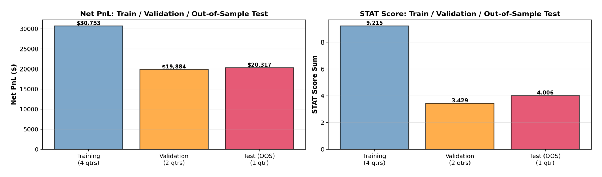
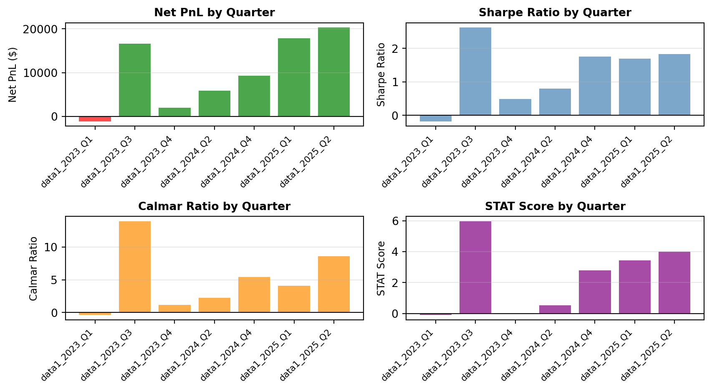
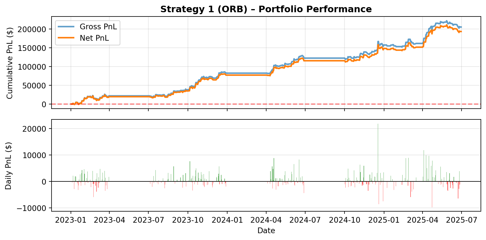
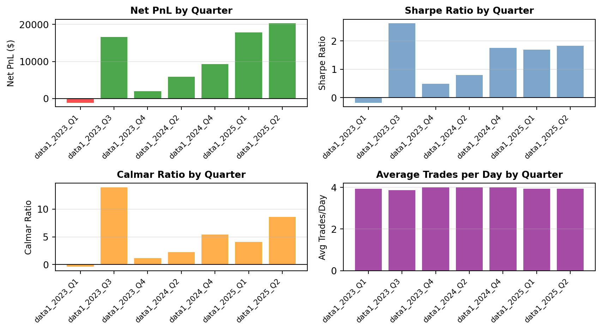
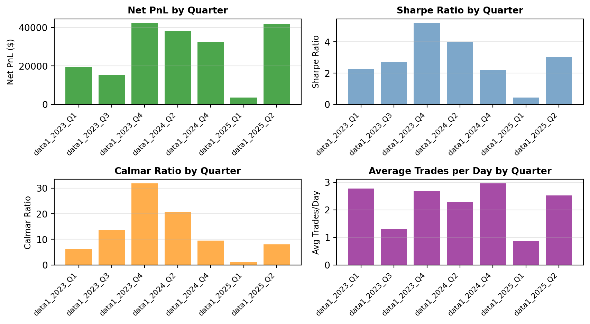
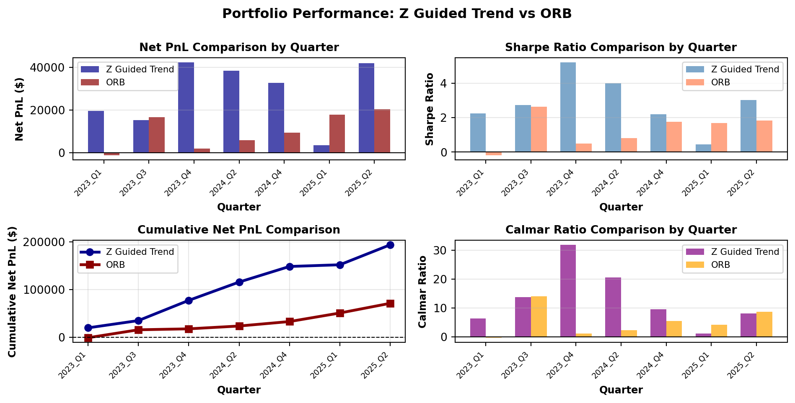

SP: ATR_window=15, ATR_mult=0.0
NQ: ATR_window=30, ATR_mult=0.2HFD Final Project – Group 1
Opening Range Breakout Strategy and Z Trend Strategy for SP & NQ Futures
Krzysztof Nalazek, Shah
2026-01-01
Project Setup
Data Specifications:
- Assets: S&P 500 (SP) & NASDAQ (NQ)
- Frequency: 1-minute bars
- Period: 2023 Q1 – 2025 Q2
- Trading: Separate signals, portfolio aggregation
Trading Constraints (both):
- Excluded windows: 9:31–9:40, 15:51–16:00
- No trading: 9:31–9:55 (volatility buffer)
- Forced flat: 15:40 onwards
- No overnight positions
Strategy Overview
Strategy 1: Opening Range Breakout
Key Features:
- Opening range: 09:41–09:55
- Breakout entry with ATR buffer
- Mean-reversion exits
- Low turnover design
Strategy 2: Z Guided Trend
Key Features:
- Trend-following entries (SMA vs SMA_slow level + slope gate)
- z-score entry with z-momentum confirmation (z accelerating into entry)
- Hard constraints: no-trade window, no new entries after 14:30, forced flat from 15:40
- Risk controls: z stop-loss + extreme z stop, cooldown after exits (reduces churn)
Strategy 1: Opening Range Breakout (ORB)
Core Algorithm:
- Opening Range Definition (09:41–09:55)
- Calculate High/Low during opening period
- Forms baseline for breakout detection
- Entry Logic (after 09:55)
- Long: Price > Range_High + (ATR × Multiplier)
- Short: Price < Range_Low - (ATR × Multiplier)
- Exit Logic
- Mean reversion: Exit when price returns inside range
- Forced flat at 15:40 (no overnight risk)
- Risk Controls
- One entry per day (prevents overtrading)
- Volatility-adjusted thresholds (ATR)
- Transaction cost awareness
Strategy 02 : Z Guided Trend
Core Algorithm:
- Trend Definition
- Fast SMA for level
- Slow SMA for intraday trend
- Trend confirmed by slow SMA slope
- Entry and Exit Logic
- Long: Trend up + price rising + z-score increasing
- Short: Trend down + price falling + z-score decreasing
- Stop-loss when z moves against position
- Exit if trend reverses
- Exit at extreme z-score levels
- Forced flat at 15:40 (no overnight)
- Risk Controls
- No trading during 09:31–09:55
- No new entries after 14:30
- Cooldown period after exits
- Transaction costs included in P&L
ORB: Parameter Optimization
3-Way Data Split:
- Training (4 qtrs): 2023_Q1, Q3, 2024_Q2, Q4
- Validation (2 qtrs): 2023_Q4, 2025_Q1
- Test (1 qtr): 2025_Q2
Grid Search:
- ATR Window: [15, 30, 60] minutes
- ATR Multiplier: [0.0, 0.05, 0.10, 0.15, 0.20]
- Selection: Based on VALIDATION performance
Optimal Parameters:
STAT Metric:
\[\text{STAT} = (\text{Sharpe}_{\text{net}} - 0.5) \times \ln(|\text{Net PnL}/1000|)\]
- Penalizes low Sharpe ratios
- Rewards larger absolute PnL
- Balances risk-adjusted and absolute returns
Methodology:
- Evaluate all combinations on TRAIN
- Select best based on VALIDATION
- Final evaluation on TEST (unseen)
Z Guided Trend: Parameter Optimization
Train/Val/Test Split:
- Training (5 qtrs): 2023_Q1, Q3, Q4, 2024_Q4, 2025_Q1
- Validation (1 qtr): 2024_Q2
- Test (1 qtr): 2025_Q2 (completely unseen)
Grid Search:
- SMA Window: [240, 360, 480] minutes
- Slow Multiplier: [3, 4]
- Slope Lookback (m): [5, 10]
- Z Entry Threshold: [1.4, 1.6, 1.8, 2.0]
- Z Stop Threshold: [3.5, 4.0, 4.5]
- Z Stop-Loss (SL) Threshold: [1.0, 1.5, 2.0]
- Z Momentum Threshold: [0.05, 0.10, 0.20, 0.30]
- Cooldown: [5, 10]
- Selection: Based on VALIDATION performance
Optimization Objective:
- We select parameters that maximize Net P&L (transaction costs included).
- This penalizes over-trading automatically via per-trade costs.
- Balances risk-adjusted and absolute returns
Methodology:
- Evaluate all combinations on TRAIN.
- Use same quarter combination on next year. (Seasonality)
- Final evaluation on TEST
Optimal Parameters:
NQ: SMA_win=360, slow_mult=3, slope_m=10, z_entry=1.6, z_stop=3.5, z_sl=2.0, z_mom=0.1, cooldown=5
SP: SMA_win=360, slow_mult=3, slope_m=5, z_entry=1.4, z_stop=3.5, z_sl=2.0, z_mom=0.05, cooldown=5ORB: Train/Validation/Test Performance

Key Observations:
- Parameters selected based on VALIDATION performance (not training)
- TEST quarter (2025_Q2) is completely unseen during optimization
- Performance degradation from train → validation → test expected, but not reported
Z Guided Trend: Train/Validation/Test Performance

Key Observations:
- Parameters selected based on TRAINING performance.
- TEST quarter (2025_Q2) is completely unseen during optimization.
- Performance degradation in PnL form, with modest risk adjusted resturns.
ORB: Key Performance Metrics
| Metric | Value | |
|---|---|---|
| 0 | Total Net PnL | $70,954.54 |
| 1 | Annualized Sharpe | 1.321 |
| 2 | Annualized Calmar | 2.266 |
| 3 | Max Drawdown | $-17,457.21 |
| 4 | Win Rate | 18.6% |
| 5 | Total Days | 452 |
Z Trend: Key Performance Metrics
| Metric | Value | |
|---|---|---|
| 0 | Total Net PnL | $193,456.15 |
| 1 | Annualized Sharpe | 2.694 |
| 2 | Annualized Calmar | 5.348 |
| 3 | Max Drawdown | $-20,166.26 |
| 4 | Win Rate | 34.7% |
| 5 | Total Days | 452 |
ORB: Portfolio Performance
Z Guided Trend : Portfolio Performance

ORB: Quarterly Performance Breakdown

Z Guided Trend : Quarterly Performance Breakdown

ORB: Per-Asset Results
| quarter | asset | atr_window | atr_mult | netSR | netCR | net_cumPnL | av.ntrades | stat | |
|---|---|---|---|---|---|---|---|---|---|
| 0 | data1_2023_Q1 | SP | 15.0 | 0.0 | 1.846 | 6.252 | $7,541 | 2.0 | 2.7185 |
| 1 | data1_2023_Q1 | NQ | 30.0 | 0.2 | -1.669 | -1.868 | $-8,688 | 2.0 | -4.6904 |
| 3 | data1_2023_Q3 | SP | 15.0 | 0.0 | -0.149 | -0.289 | $-367 | 1.9 | -0.0000 |
| 4 | data1_2023_Q3 | NQ | 30.0 | 0.2 | 3.195 | 26.024 | $17,034 | 1.9 | 7.6420 |
| 6 | data1_2023_Q4 | SP | 15.0 | 0.0 | -3.469 | -4.043 | $-3,811 | 2.0 | -5.3101 |
| 7 | data1_2023_Q4 | NQ | 30.0 | 0.2 | 1.571 | 3.918 | $5,798 | 2.0 | 1.8819 |
| 9 | data1_2024_Q2 | SP | 15.0 | 0.0 | 1.133 | 4.757 | $3,193 | 2.0 | 0.7345 |
| 10 | data1_2024_Q2 | NQ | 30.0 | 0.2 | 0.521 | 1.308 | $2,710 | 2.0 | 0.0205 |
| 12 | data1_2024_Q4 | SP | 15.0 | 0.0 | 1.828 | 6.627 | $3,785 | 2.0 | 1.7675 |
| 13 | data1_2024_Q4 | NQ | 30.0 | 0.2 | 1.331 | 4.457 | $5,545 | 2.0 | 1.4228 |
| 15 | data1_2025_Q1 | SP | 15.0 | 0.0 | 2.576 | 7.738 | $10,829 | 2.0 | 4.9447 |
| 16 | data1_2025_Q1 | NQ | 30.0 | 0.2 | 0.998 | 2.348 | $7,068 | 2.0 | 0.9748 |
| 18 | data1_2025_Q2 | SP | 15.0 | 0.0 | 1.671 | 8.026 | $7,355 | 2.0 | 2.3361 |
| 19 | data1_2025_Q2 | NQ | 30.0 | 0.2 | 1.882 | 9.009 | $12,962 | 2.0 | 3.5420 |
Z Guided Trend: Per-Asset Results
| quarter | asset | netSR | netCR | net_cumPnL | av.ntrades | |
|---|---|---|---|---|---|---|
| 0 | data1_2023_Q1 | NQ | 2.555 | 8.425 | $18,383 | 1.2 |
| 2 | data1_2023_Q1 | SP | 0.300 | 0.533 | $1,182 | 1.5 |
| 3 | data1_2023_Q3 | NQ | 2.612 | 14.258 | $10,071 | 0.5 |
| 5 | data1_2023_Q3 | SP | 2.290 | 8.470 | $5,146 | 0.8 |
| 6 | data1_2023_Q4 | NQ | 5.428 | 29.599 | $28,337 | 1.2 |
| 8 | data1_2023_Q4 | SP | 4.184 | 22.742 | $13,969 | 1.4 |
| 9 | data1_2024_Q2 | NQ | 4.443 | 35.315 | $33,558 | 1.4 |
| 11 | data1_2024_Q2 | SP | 1.689 | 3.983 | $4,788 | 0.9 |
| 12 | data1_2024_Q4 | NQ | 1.633 | 8.182 | $17,438 | 1.7 |
| 14 | data1_2024_Q4 | SP | 3.011 | 8.854 | $15,213 | 1.2 |
| 15 | data1_2025_Q1 | NQ | -0.070 | -0.143 | $-456 | 0.5 |
| 17 | data1_2025_Q1 | SP | 1.896 | 4.954 | $4,024 | 0.4 |
| 18 | data1_2025_Q2 | NQ | 2.748 | 5.974 | $23,531 | 1.3 |
| 20 | data1_2025_Q2 | SP | 3.234 | 10.778 | $18,271 | 1.2 |
ORB: Strategy Summary
Strengths:
- Consistent positive returns across most quarters
- Low turnover (controlled transaction costs)
- Clear entry/exit rules
- Adapts to volatility via ATR
Key Observations:
- Strategy performs well in trending markets
- ATR filter effectively reduces false breakouts
- Mean-reversion exit manages risk
Risk Management:
- No overnight positions (flat at 15:40)
- One entry per day (prevents overtrading)
- Volatility-adjusted thresholds
- Excludes unreliable time windows
Overall Portfolio Performance:
Total Net PnL: $70,954.54
Total STAT Score: 16.6499
Avg Net Sharpe: 1.287Z Guided Trend: Strategy Summary
Strengths:
- Trend-aligned entries via fast/slow SMA filter
- Uses z-momentum confirmation to reduce early/late fades
- Intraday-only design (no overnight exposure)
- Works on both SP and NQ with the same logic
Key Observations:
- Best performance tends to occur in sustained intraday trends
- Z-momentum filter helps avoid entries on flattening/extreme z moves
- Cooldown reduces rapid flip-flopping after exits
Risk Management:
- No trading during 09:31–09:55 (volatility buffer)
- No new entries after 14:30
- Forced flat from 15:40 onwards
- Stop-loss in z-space + extreme z exits
- Transaction costs included in net P&L
Overall Portfolio Performance:
import pandas as pd
from pathlib import Path
BASE_DIR = Path.cwd()
OUT_DIR = BASE_DIR.parent / "Testing" / "outputs_strategy02"
perf = pd.read_csv(OUT_DIR / "strategy02_perf.csv")
port = perf[perf["asset"]=="PORTFOLIO"]
overall_pnl = port['net_cumPnL'].sum()
overall_sharpe = port['netSR'].mean()
# Calculate STAT for Strategy 2
overall_stat = sum([(sr - 0.5) * np.log(abs(pnl/1000)) if pnl != 0 and np.isfinite(sr) else 0
for sr, pnl in zip(port['netSR'], port['net_cumPnL'])])
print(f"Total Net PnL: ${overall_pnl:,.2f}")
print(f"Total STAT Score: {overall_stat:.4f}")
print(f"Avg Net Sharpe: {overall_sharpe:.3f}")Total Net PnL: $193,456.15
Total STAT Score: 56.8480
Avg Net Sharpe: 2.833Strategy Comparison: ORB vs Z Guided Trend

Final Comparison: Key Metrics
| Metric | Z Guided Trend | ORB | |
|---|---|---|---|
| 0 | Total Net PnL | $193,456.15 | $70,954.54 |
| 1 | Total STAT Score | 56.8480 | 16.6499 |
| 2 | Average Sharpe Ratio | 2.833 | 1.287 |
| 3 | Average Calmar Ratio | 13.013 | 5.011 |
| 4 | Quarters Profitable | 7/7 | 6/7 |
| 5 | Best Quarter PnL | $42,306.04 | $20,317.28 |
| 6 | Worst Quarter PnL | $3,568.43 | $-1,146.98 |
Thank You
Questions?